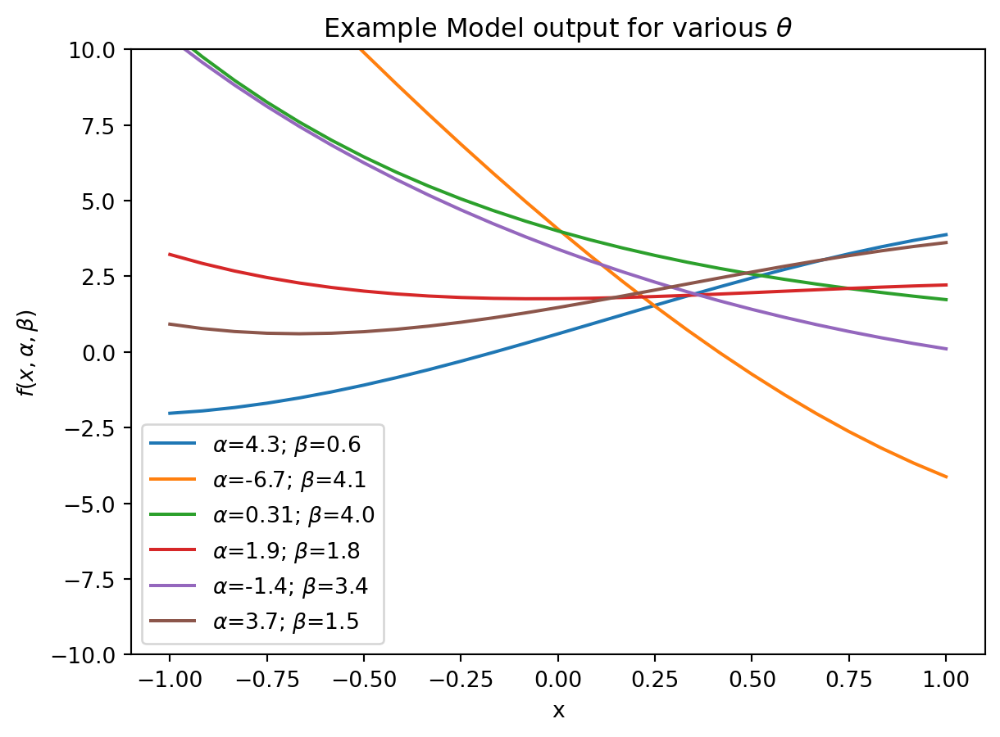
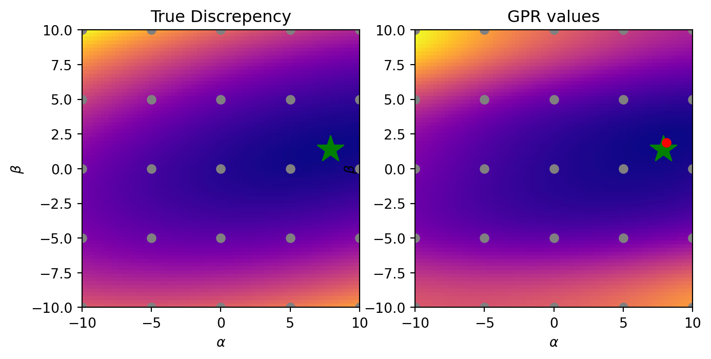
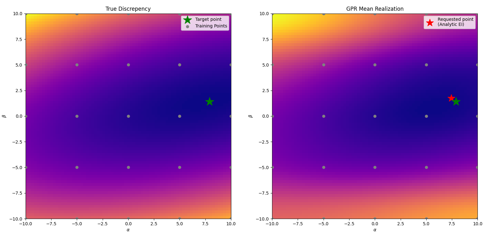
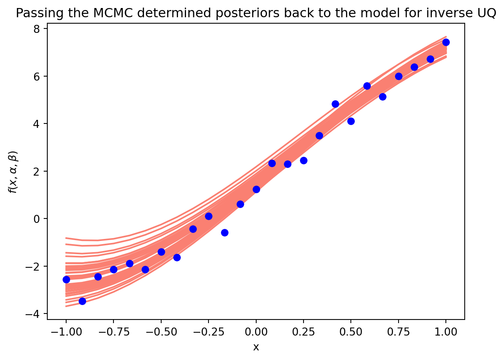

2Bayesian Optimization Example for Model Validation
Given some model \(f(x, \theta) \rightarrow y\), which takes inputs \(x\) and free parameters \(\theta\), and maps them to \(y \in \mathbb{R}^d\), the validation exercise is the following:
given an observed measurement or pheonemna \(\hat{y}\), we aim to find \(\theta\) such that \(f(x, \theta) \sim \hat{y}\). Once we find an optimal \(\theta\), our secondary goal is to assess i) how certain we are that \(\theta\) is the optimal, and ii) how do changes in \(\theta\) propagate through our model (Wu et al. 2018).
2.1 Example Model
Let’s consider the model \[f(x, \alpha, \beta) = \alpha\sin(x) + \beta e^{-x}\]
The free parameters are \(\alpha, \beta\).
Code
import matplotlib.pyplot as plt import numpy as np import matplotlib as mpl model_f =lambda x, alpha, beta: (alpha*np.sin(x) + beta*np.exp(-x)) # / gamma*np.cos(x)num_samples =25x_range = np.linspace(-1, 1, num_samples)fig = plt.figure()for i inrange(6): alpha =4.0* np.random.randn() beta =1.0* np.random.randn() +2 gamma =1* np.random.randn() plt.plot(x_range, model_f(x_range, alpha, beta), label=r'$\alpha$={alpha:.2}; $\beta$={beta:.2}'.format(alpha=alpha, beta=beta))plt.legend()plt.title(r'Example Model output for various $\theta$')plt.ylabel(r'$f(x, \alpha, \beta)$')plt.xlabel('x')plt.ylim(-10, 10)plt.show()

Let’s say we have some noisy measurements now that we want to validate the model against:
The goal is then to find \(\alpha = 7.9\) and \(\beta = 1.4\). Additionally, it would be nice to know how certain we are about \(\alpha, \beta\).
2.2 Framing model validation as an optimization problem
Formally, we want to find \[\underset{{\theta \in \mathcal{D}}}{\text{argmin}} ( r(f(x, \theta), \hat{y}))\] where \(r(f, \hat{y})\) is a mapping \(r: \mathbb{R}^d\times\mathbb{R}^d \rightarrow \mathbb{R}^+\) describing the discrepency between the model output and experimental observation, and \(\mathcal{D}\) is the space in which parameters \(\theta\) are constrained.
For our example, we can use the L-2 norm as a discrepency function: \[r(f(x, \theta), \hat{y}) = | f(x, \theta) - \hat{y} | ^2_2\]
To visualize the discrepency function, we can sample \(\alpha, \beta\) and compute \(r\).
Model outputs from draws of \(\alpha, \beta\) compared to the experiment we want to model. The draws are coloured by their discrepency with the experiment (colorbar on the right plot), The draws of \(\alpha\) (x-axis), \(\beta\) (y-axis) coloured by the discrepency value (L2 norm) of the model output with those values.
In real world examples, we do not have direct (analytical) access to \(r\). Therefore, we want to make an approximate of \(r\).
2.3 Surrogate model of the discrepency between model and experiment (\(r\))
\(r\) can be approximated by any number of functions. Therefore, a Gaussian Process Regression (GPR) is a good start. A good overview of GPRs can be found in Rasmussen and Williams (2006) and Williams and Rasmussen (1995). The points relevant to this discusison are that: i) GPR defines a family (distribution) of functions, normally Guassian, and ii) like any model, a GPR has hyperparameters, typically \(D + 3\) parameters, for \(D\) dimensionality of the data you want to fit (in this case 2). The traditional GPR thus learns a model that outputs a distribution: \[\hat{r} \sim \mathcal{N}(\mu (\theta, \text{hyper}), \sigma (\theta, \text{hyper}))\]
where \(\mu\) and \(\sigma\) are deterimed by what are called the kernel and mean function of the GPR. Additionally, the kernel and mean function have hyperparameters, \(\text{hyper}\) that we must fit. Another key point is that the kernel and mean function are differentiable functions.
We are only as good as our surrogate model. To find a good surrogate model, we must find the proper hyperparameters of the kernel and mean function of the GPR.
Approach 1: Point-wise estimation via maximizing the log-likelihood
In this example, we will use a Gaussian likelihood GPR, i.e., we say that the probability density of observing a point \(R = r(\theta)\) that is generated by a Gaussian distribution is given by:
\[P(R, \mu, \sigma) = \frac{1}{\sigma \sqrt{2\pi}} \exp \left( -\frac{(R - \mu)^2}{2\sigma^2}\right)\] where, one again, \(\mu\) and \(\sigma\) are outputs of our GPR. Notice this probability distribution has a maximum if the mean output of our GPR matches that of the point we observe, i.e., \(\mu = R\). If we have mutliple points to fit, \(\vec{R} = (r(\theta_1), r(\theta_2), r(\theta_3), \dots, R_i)\), then the total joint probability distribution of observing all the points is given by the product of their likelihood:
However, it is easy to see that with many points, we will likely hit some numerical underflow, therefore we can make use of the logarithm:, \[\ln(P(\vec{R}, \mu, \sigma)) = i\ln \left(\frac{1}{\sigma \sqrt{2\pi}}\right) - \sum_i \left(\frac{(R_i - \mu)^2}{2\sigma^2}\right)\]
We can then differentiate this function in order to find the maximum and apply our favourite gradient based optimizer to find the hyperparameters of the kernel and mean function that determine \(\mu\) and \(\sigma\). This approach is called Maximum Likelihood Estimation (MLE). Note: This is called point-wise because we are estimating the hyperparameters of the GP ‘per point’ we use to fit the GP.
Below is an example of the ‘lengthscale’ parameters of the covariance function, where the countours are the(negative) log-likelihood estimation.
An MLE optimization run using the Adam optimizer for GPR kernel lenghtscales (outputscales, mean function scale, and likelihood noise are fixed). Even for a uni-model landscape, if the mode is very flat, it can result in many optimizers getting stuck. This is why multiple restart optimizers are useful for global hyperparameter finding.
Remember, we will use the surrogate model as a proxy for finding the optimal model inputs, therefore, if we just blindly trust the MLE of hyperparameters selection, we may be wrong! In the case that we are wrong, we don’t have much in terms of quantifying how uncertain we are about the wrong fit just fitting the MLE.
Regardless, for small dimensionality and sufficiently uni-modal landscape, MLE gives a decent approximation.
Iter 300/300 - Loss: 2.484 lengthscales: 8.825, 3.459 noise: 0.000 mean length: 3.368 outputscale: 4.126

MLE for all hyperparameters of GPR results in decent approximation.
Generally, the fit is alright. It’s nice how we already have a close approximation of what should be the optimal value!
Approach 2: Marginalizing the hyperparameters out
According to Bayesian formalisim 1, we should start with a prior distribution over the hyperparameters, \(P(\text{hyper})\), which is in turn modified using training data \(\theta\) to produce a posterior \(P(\text{hyper}|\theta)\). To make predictions, we should then integrate over the posterior. With the above example, the predicted mean output of the GPR is \(\hat{\mu}(\theta_i)\) for a given input \(\theta_i\) is:
\[\hat{\mu} (\theta_i) = \int \mu_{\text{hyper}} (\theta_i) P(\text{hyper}|\theta) d\text{hyper}\] where \(\mu_{\text{hyper}}\) is the preidcted mean for a particular value of \(\text{hyper}\).
In this simple case, this is actually analytically feasable, but with fusion models, typically not. Therefore, we can apply MCMC and its friends. So we perscribe priors distributions over \(P(\text{hyper})\) and use MCMC to give us samples from the posterior.
Example MCMC Chains over the GPR hyperparameters
We can then take draws from the above posterior distributions.
Example draws from posterior realization, here the red dot is the analyitical minimum of the posterior draw. Green start is the actual minimum.
Now that we have a fitted surrogate model, we would like a way to query it to obtain new points (\(\alpha, \beta\)), that hopefully better fit the experimental data with our model.
2.4 Aquiring new points from the surrogate
This is done using an aquisition function: \[ \alpha (\theta | \text{hyper}): \mathcal{R}^d \rightarrowtail \mathcal{R}\]
Aquisition functions essentially measure the quality of a point \(\theta\) (here, once again our \(\alpha, \beta\)), and decide at which location of \(\theta \in \mathcal{D}\) is most ‘promising’. The acquisition function is based on our surrogte models predictive distribution \(p(R | \theta, \text{hyper})\). Usually, the acquistion function depends on the posterior mean prediction, \(\mu(\theta)\), and the associated posterior uncertainty, \(\sigma(\theta)\).
A popular acquisition function is the Expected improvement2\[\alpha_{\text{EI}} (\theta | \text{hyper}) = \mathcal{E}_{p(R | \theta, \text{hyper})} \left[ \text{min}(R^* - R(\theta), 0 )\right]\]
The way we use the acquisition function will change depending on if we took approach 1 or 2 from above.
Approach 1: Using the MLE surrogate
From our surrogate model with \(\text{hyper}\) determined by MLE, we can plug in \(\mu\), \(\sigma\) into the above equation.
where \({\text{hyper}^1, \dots, \text{hyper}^m}\) are samples drawn from \(p(\text{hyper}|R)\). In essence, we draw models via the hyperparameter posterior, \(\theta\), which yield us \(\mu\), \(\sigma\) for each model, and apply the acquisition function to each, averaging over all outputs as our desired point.

Example acquisition function by averaging over GP integration realizations
2.5 The full BO algorithm
The full BO algorithm looks like the following:
Lets show the evolution in practice. We create 50 different sets of 8 ‘initial data’ points (\({(\alpha_i, \beta_i), R_i}\)), with \(\alpha, \beta\) sampled from uniform distributions and pass them through the model to get \(R_i\). We then perform the BO algorithm above, for 30 acquisition iterations.
BO implementation for 50 trials of 30 aquisition iterations with the GPR fitted via MLE. Each iteration samples 1 new point. The median best optimal value insofar is plotted, with the 10-90 percent quantiles as error bars.
From the above plot, we can see that the BO system does not always fully converge! Reasons for this may be that i) our aquisition function is not ideal, ii) the MLE estimation of GP hyperparameters fails, iii) the combination of i) and ii) leads the model to find a local minimum and exploit that.
Regardless, the median of trials do converge to a minimum, which is plotted below.
The model output for the given (MLE) BO output after 30 iterations.
2.6 Obtaining uncertainties
We can recover the optimal \(\theta\) determined by the BO algorithm, as well as our uncertainty regarding it. This is our forward uncertainty. To do this, we take the fitted model (either by MLE or margnilzation over hyperparameters), and perform MCMC integration over the posterior, w.r.t input parameters, i.e., we sample \(\theta\) around where the model posterior is at its minimum.
Code
# using a fitted model likelihood, model = mll.likelihood, mll.model likelihood.eval()model.eval() from pyro.infer import NUTS, MCMC import pyro import pyro.distributions as distimport arviz as az def mcmc_model(): alpha = pyro.sample('alpha', dist.Normal(0, 5)) beta = pyro.sample('beta', dist.Normal(0, 5)) inputs = torch.stack([alpha, beta], 0).unsqueeze(0) model_output = likelihood(model(inputs))return pyro.sample('y', dist.Normal(model_output.mean, model_output.variance), obs=torch.tensor(0.0))nuts_kernel = NUTS(mcmc_model)mcmc = MCMC(nuts_kernel, num_samples=500, num_chains=1)mcmc.run()
MCMC over posterior yields us the uncertainty of our optimal parameters w.r.t to the BO task.
The mean of the distribution should represent our optimal value(s), the spread our confidence that it is the optimal value(s). Additionally, we can use this distribution to gather inverse uncertainty about how the model is affected due to changes in \(\theta\).
We can use the sample from the distributions determined from the MCMC sampling and and pass those through the model.
Code
var_alpha, var_beta =0.2, 0.3mu_alpha, mu_beta =7.8547, 1.4062alpha_sample = torch.FloatTensor(40).normal_(mu_alpha, var_alpha)beta_sample = torch.FloatTensor(40).normal_(mu_beta, var_beta)samples = torch.stack([alpha_sample, beta_sample], 1)fig = plt.figure() for alpha, beta inzip(alpha_sample, beta_sample): plt.plot(x_range, model_f(x_range, alpha.item(), beta.item()), label=r'$\alpha$={alpha:.4}; $\beta$={beta:.4}'.format(alpha=alpha, beta=beta), color='salmon')plt.scatter(x_range, experimental_result, zorder=20, color='blue')plt.title('Passing the MCMC determined posteriors back to the model for inverse UQ')plt.ylabel(r'$f(x, \alpha, \beta)$')plt.xlabel('x')plt.show()

Inverse uncertainty propogated back to the model by using the MCMC determined distributions. One could take the expectation over these distributions, i.e., mean and standard deviation for a single line and shaded region.
Great! For a single experimental result, we now know our optimal values, how certain we are about them, and how that uncertainty affects the model output.
2.7 Scaling to multiple experiments
Imagine that we had the following experimental results from two different sets of experiments with similar configurations respectively (e.g., Deuterium seeded vs Tritium seeded):
We would have the option of the following choices of implementation:
try to find a single set of \(\theta\) that best fit all of a given set of experiments (e.g., \(\theta\) for blue lines above)
This will modify our discrepency function as being the average discrepncy across the given experiments
find \(\theta\) for each experiment, and consider the distribution of \(\theta\) for each set
Note: This assumes we know a priori about the different experiments.
But, I am open to better ideas.
2.8 References
Ath, George De, Richard M Everson, Jonathan E Fieldsend, and Jonathan E 2021 Fieldsend. 2021. “How Bayesian Should Bayesian Optimisation Be?”https://doi.org/10.1145/3449726.3463164.
Rasmussen, Carl Edward, and Christopher K. I. Williams. 2006. Gaussian Processes for Machine Learning. Adaptive Computation and Machine Learning. MIT Press. https://www.worldcat.org/oclc/61285753.
Snoek, Jasper, Hugo Larochelle, and Ryan P. Adams. 2012. “Practical Bayesian Optimization of Machine Learning Algorithms.”https://arxiv.org/abs/1206.2944.
Wu, Xu, Tomasz Kozlowski, Hadi Meidani, and Koroush Shirvan. 2018. “Inverse Uncertainty Quantification Using the Modular Bayesian Approach Based on Gaussian Process, Part 1: Theory.”Nuclear Engineering and Design 335: 339–55. https://doi.org/https://doi.org/10.1016/j.nucengdes.2018.06.004.
This formulation is more or less copied directly from Gaussian Processes for Regression from Williams and Rasmussen.↩︎
A nice overview is given in this blog post where \(R^*\) is the best function value observed so far, i.e., minimum discrepency. This measures the expected negative improvement (since we are minimizing) over the best function value observed so far.↩︎